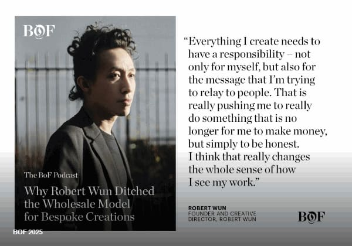
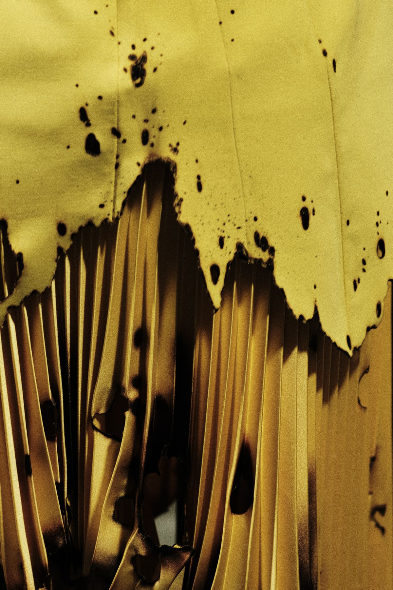

Press
Robert Wun has been called many things — sculptor, architect, poet of the body. What follows is the world's response to a decade of singular vision.
COVER FEATURE
ROBERT WUN
It's 10 a.m. in Paris. The sky is crystal clear, the sun is shining, and you've just had your café. Life feels cinematic...
FEATURE
VEXCLUSIVE: SWAROVSKI PARTNERS...
At the Théâtre de Châtelet this week, London-based designer Robert Wun staged his return to Paris Couture Week...
REVIEW
ROBERT WUN COUTURE F/W 2025...
The collection is titled Becoming, but this wasn't about gentle evolutions or clean-cut reinventions. Robert Wun's Fall/Winter...
REVIEW
Robert Wun Explores Transformation...
It's 10 a.m. in Paris. The sky is crystal clear, the sun is shining, and you've just had your café. Life feels...






REVIEW
Trois visions excentriques de la haute...
Pour les collections automne-hiver 2025-2026, présentées à Paris du 7 au 10 juillet, les robes se...
RUNWAY
將換裝時刻化為超現實藝術 Robert Wun...
香港設計師 Robert Wun 發布 2025 秋冬高級訂製服系列，新作從生活微小時刻出發，將著裝的過程定格...
REVIEW
Haute couture: Robert Wun signe...
Le créateur hongkongais Robert Wun, révélé en 2023 sur les podiums parisiens, a présenté mercredi au Théâtre du Châtelet...